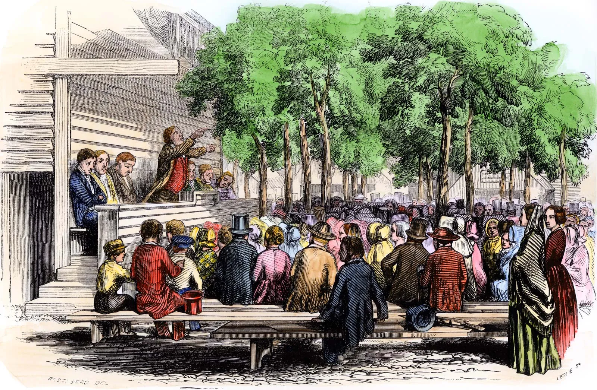
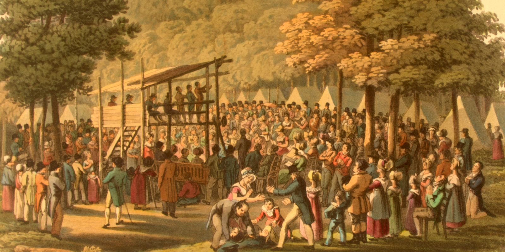
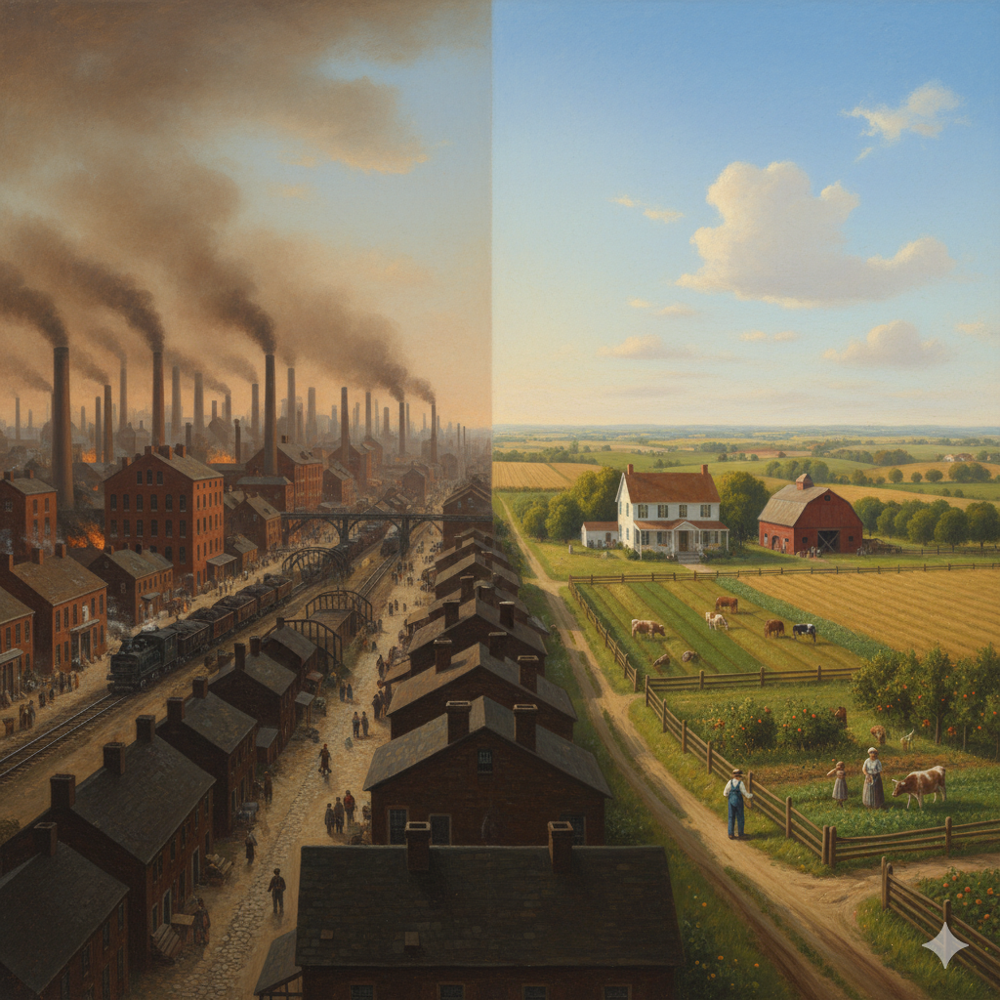
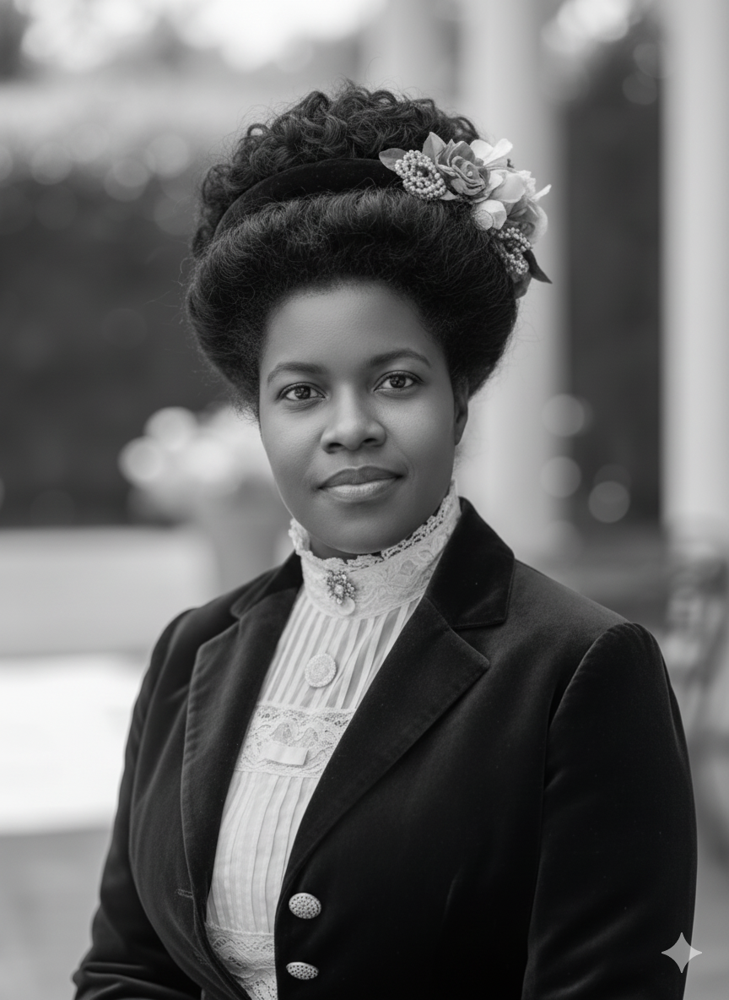

The Second Great Awakening
From the 1790s, a series of intense religious revivals took place on the western frontier, spreading throughout the country by the 1850s. This became known as the Second Great Awakening.
Main Features:
Large, emotional gatherings where people experienced conversion
Ordinary people claimed spiritual authority, not just ministers or elites
Methodists and Baptists surged ahead of older churches
Birth of new sects like the Mormons, Adventists, and Shakers
Events understood as signs of God's plan
Mass Revivals and Camp Meetings
Cane Ridge, Kentucky (1801)
Often cited as the most dramatic early revival
- Reports of 20,000 people attending
- Lasted for several days and nights
- People traveled hundreds of miles to attend
Key Characteristics:
- Itinerant preachers—especially Methodists and Baptists—took center stage
- Emotional displays: people "jerking," rolling on the ground, ecstatic singing, shouting
- Outdoor venues: Revivals were often outdoors because churches couldn't contain the crowds
- Multi-denominational cooperation in evangelistic efforts
Itinerant Preachers and "Circuit Riders"
Methodist ministers, usually young men, traveled vast circuits on horseback, bringing religion to frontier communities.
Their Appeal:
Simple messages: repentance, personal faith, conversion experience
Plain language: spoke with passion rather than polished theology
Accessible: reached ordinary people regardless of class or education
Charles Grandison Finney:
The Master Revivalist
Background
- Lawyer turned revivalist preacher
- Active 1820s–1830s, especially in upstate New York
- Most influential revivalist of the era
Finney's Innovations
- "New Measures": Emotionally manipulative techniques to induce conversion
- Anxious bench: Public seating for those seeking salvation
- Protracted meetings: Multi-day revival campaigns in cities
- Women's prayer groups: Encouraged female participation
"You are not helpless sinners waiting for God's inscrutable decree. You can choose salvation today!"
The "Burned-Over District"
Location & Term
- Region: Upstate New York (especially along Erie Canal)
- Term origin: "Burned over" by so many revivals that spiritual fuel was exhausted
- Period: 1820s–1840s
Why This Region?
- Rapid settlement and economic growth along Erie Canal
- Social disruption from market revolution
- Mix of New England migrants and diverse settlers
- Anxiety about social change and moral order
Religious Movements and Reforms Born Here
- Mormonism (Joseph Smith, 1830)
- Seventh-Day Adventism (William Miller's millennialism)
- Spiritualism (Fox sisters)
- Oneida Community (John Humphrey Noyes)
- Temperance movement (strongest here)
- Women's rights activism (Seneca Falls, 1848)
Significance: The Burned-Over District shows how religious enthusiasm could produce both mainstream reform and radical experimentation. It was a laboratory for democratic religion and social change.
Democratization of Religion
Definition: The process by which religious authority, practice, and interpretation shifted from elites to ordinary people
Breaking Down Authority
- Decline of Educated Clergy: No need for formal education or institutional authority to preach
- Emotional Over Intellectual: Preaching became direct, plainspoken, and passionate rather than theological
- Rejection of Predestination: Free will and individual choice replaced Calvinist determinism
- Voluntary Association: People "shopped" for churches; congregations voted on leadership
- Rise of Lay Preachers: Circuit riders were often poor, itinerant, self-taught—authenticity over credentials
- Personal Experience Valued: "Heart religion" trumped "head religion"—ordinary people could judge their own salvation
- Accessible to All: Anyone could testify, anyone could be converted
Expanding Participation
Emerged as exhorters, prayer leaders, and spiritual guides—gaining religious authority despite limited political rights
Established vibrant churches, such as the AME, which grew to 20,000 members by 1850, expanding the SGA's influence and supporting education and moral reform
Ordinary believers took active roles in worship, testimony, and church governance—religion became truly participatory
Result: Christianity became more participatory and emotional—broadening religious engagement to foster civic and moral cohesion among diverse groups, including women and African Americans
Women and Religious Democratization
Women's Majority in Churches
- By 1830s, women were 60–70% of church members
- More likely to convert and attend regularly than men
- Dominated prayer meetings and benevolent societies
- Black women: Central to independent Black churches (AME, AME Zion, Baptist)
Why Women?
- Excluded from formal political participation
- Religion offered authority and voice
- Churches provided community and social networks
- Moral reform aligned with women's domestic roles
- For Black women: Churches served as centers for mutual aid, education, and resistance
Women's Religious Authority
- Exhorters: Women who spoke at revival meetings
- Prayer leaders: Led prayer circles and maternal associations
- Reformers: Founded and led benevolent societies
- Missionaries: Single women as foreign missionaries
- Writers: Published religious literature and hymns
- Black women leaders: Teachers, mutual aid organizers, church founders (e.g., Jarena Lee, preacher in AME Church)
Limitations: While women gained religious authority, they were still barred from formal ordination (with rare exceptions like Phoebe Palmer). Their authority was real but constrained by gender norms. Black women faced additional barriers of racism but created powerful networks through churches and reform societies.
African American Religious Democratization
Independent Black Churches
- African Methodist Episcopal (AME): Founded 1816 by Richard Allen in Philadelphia
- African Methodist Episcopal Zion: Founded 1821 in New York
- Black Baptist churches: Grew rapidly in North and South
Why Independent Churches?
- Racism and segregation in white churches
- Desire for self-governance and cultural expression
- Churches became centers of Black community life
- Training ground for Black leadership
Religious Authority
- Black preachers as community leaders
- Churches as political, social, and economic hubs
- Religion tied to resistance and liberation
Come-Outers & New Religious Movements
Come-outerism (quick note)
1830s–40s posture of withdrawing from “corrupt” churches to seek a purer, lay-led, perfectionist faith—often linked to radical reform (abolitionism, non-resistance, utopianism).
Out of the same ferment came new religious movements that reshaped the landscape. Some behaved like come-outers for a season; others founded entirely new churches.
- Restorationist: new scripture (Book of Mormon), prophetic authority
- Millennial expectation; gathered communities; westward migration under pressure
- Note: not classic “come-outer,” but a new church
- Communal, celibate, gender-egalitarian; ecstatic worship & simplicity
- Stood outside mainstream denominations—functional come-outers
- Renowned craft, order, and discipline
- Imminent Second Coming preaching; 1844 “Great Disappointment”
- Many left home churches in 1843–44 (strong come-outer dynamics)
- Reorganized as Seventh-day Adventists: prophecy, Sabbath, health reform
Why it matters
- Authority shifted from clerical elites to lay-led communities
- Religious innovation fueled social reform and new communal experiments
- Helped nationalize a grassroots, populist style of American faith
The Providential Worldview
Providential Worldview Defined:
Americans interpreted daily events and history itself as part of God's cosmic drama. Suffering, disasters, political changes—all read as divine signs and messages.
Examples in American Life:
Cholera epidemics seen as divine punishment or wake-up calls for moral reform
Westward expansion interpreted as God's plan—seeds of "Manifest Destiny"
Reform movements (temperance, abolition, women's rights) seen as fulfilling divine purpose
Consequences:
Ordinary Americans believed they were actors in a cosmic story.
This gave urgency to social reform—if history is God's story, then changing society is a moral duty.
Significance of the Second Great Awakening
Challenged established religious hierarchies and reinvigorated American Christianity with emotional vitality
Shifted spiritual power from educated clergy to common believers, making religion accessible to all classes
Created uniquely American denominations and sects that would shape national identity
Framed how Americans would interpret everything—from personal struggles to national destiny—as part of God's plan
The Second Great Awakening transformed not just American religion, but American culture, politics, and social reform movements for generations to come.
The Connection Between Religion and Social Reform
Core Idea: Revival faith created moral energy; the emerging northern middle class—especially middle-class women—turned that energy into durable institutions.
1) Religious Spark: Theology that Ignites Action
- Perfectionism: Belief that humans could achieve sinless perfection
- Postmillennial hope: build a more righteous order before Christ’s return.
- Social gospel: Christians obligated to reform society, not just save souls
- Conversion ethic: changed hearts must produce visible fruits.
- Benevolent empire: Network of reform societies to Christianize America
2) Moral Energy Transformed: From Personal Piety to Public Duty
Revivalism reframed salvation as choice and accountability. If individuals can choose righteousness, communities can choose to confront “social sins” (e.g., drink, bondage, cruelty) through organized effort. Personal sanctification → collective obligation.
Temperance, abolitionism, women's rights, prison reform, education reform—all energized by evangelical Christianity
Emphasized self-improvement, moral discipline, and individual agency—personal transformation as path to social transformation
These same values would become the cultural markers of the emerging Northern middle class
3) Moral Energy Institutionalized: The Middle-Class Structure of Reform
Print culture, literacy, and steady incomes funded voluntary associations, circulating libraries, Sunday schools, tract societies, and lecture circuits—turning zeal into routines, dues, bylaws, and boards.
The cult of domesticity cast women as guardians of virtue. Middle-class women operationalized revival values—organizing visitations, fundraising, relief, and discipline through mothers’ societies, moral reform associations, and female auxiliaries.
Respectable tone, sober bookkeeping, and church-linked networks gave reforms legitimacy and endurance, embedding them in schools, charities, and civic life.
The revival provided the spark; class and gender dynamics supplied the structure.
Reform was not a secular departure from revivalism—it was its fulfillment. Ideas—especially moral and religious ones—
shaped social change by giving reform its vocabulary, institutions, and enduring sense of mission.
The Northern Middle Class
Economic Transformation
- Market Revolution created new towns and cities and transformed old ones
- Turned the rural North into a landscape of family-owned commercial farms
- Created opportunities for social mobility through entrepreneurship and trade
Who Comprised the New Middle Class?
Shopkeepers, traders, and commercial entrepreneurs connecting rural and urban economies
Artisans who transformed small workshops into larger manufacturing enterprises
Agricultural producers growing crops for commercial sale rather than subsistence
A new class defined not just by wealth, but by values of self-discipline, moral improvement, and economic ambition
New England played a disproportionate role in the making of middle-class culture—exporting Yankee values of work ethic, moral reform, and self-improvement throughout the North.
Liberty and Equality Redefined
Liberty
For the Yankee middle class, liberty meant self-ownership and the freedom of action and ambition.
- Freedom to pursue economic opportunity
- Independence from masters or patrons
- Self-made success through hard work
Equality
Equality meant equality of opportunity, not outcome.
- Everyone should have a fair chance
- Success depends on individual merit
- Hierarchy based on achievement, not birth
This redefinition would become fundamental to American capitalism and individualism—but also created tensions with ideas of communal obligation and structural inequality.
From Republican Motherhood to Cult of Domesticity
Republican Motherhood (1790s–1820s)
Women's civic duty centered on raising virtuous, educated sons to sustain the republic
- Political role expressed through motherhood
- Emphasized women's moral influence
- Required women's education
- Tied to Revolutionary ideals
The Rise of Separate Spheres
Industrialization and the Market Revolution divided public (male) and private (female) realms
- Men: market, politics, wage labor in public sphere
- Women: home, religion, moral nurture in private sphere
- Family became a moral refuge in an industrializing world
Cult of Domesticity (1830s–1850s)
Ideal of womanhood defined by four cardinal virtues:
- Piety
- Purity
- Domesticity
- Submission
Women positioned as moral anchors amid market chaos—guardians of virtue, not participants in politics or commerce.
Contribution to Republican Values
The Cult of Domesticity elevated women’s moral influence, fostering stable families that supported evangelical reforms and republican values.
Domesticity and the Moral Household
The Home as "Moral Refuge"
- The Home as Miniature Church: Domestic space became sacred space—site of daily worship, moral instruction, and spiritual formation
- Women's Spiritual Authority: Led prayer circles, organized Sunday schools, taught children scripture and hymns
- Parlor Bible Reading: Family devotions became daily rituals, with mother often leading
Cultural Influence
Domestic fiction and publications like Godey's Lady's Book extended moral influence, teaching proper domesticity
Gender and Class Distinctions
Middle-class domestic ideals distinguished "respectable" women from working-class and immigrant women, who were often portrayed as morally suspect for working outside the home.
Significance
- Women gained real authority: Spiritual leadership in the home and community was meaningful power, not just symbolic
- Religion became democratized: You didn't need ordained clergy for daily religious practice—families did it themselves
- Moral culture unified the nation: Shared religious and moral values (taught by mothers) created a common American identity across regions and classes
- Reform movements flourished: Women's moral authority gave them legitimacy to fight for temperance, abolition, and education—improving the republic
Beyond the Cult of Domesticity
Class, Race, and Regional Realities
A Middle-Class Ideal
The Cult of Domesticity reflected the experiences of white, middle-class, northern women. It required leisure, literacy, and financial stability—privileges of class.
Working-Class Women
Lowell Mill Girls
- Young, unmarried women from New England farm families
- Worked in textile mills before marriage—earning wages for dowries, family support, or independence
- Faced long hours (12-14 hour days), low pay, and little autonomy
- Activism: Organized early labor protests (1830s–1840s), demanding better conditions through strikes and petitions
Poor Working-Class and Free Black Women
- Economic necessity required wage work even after marriage
- Worked in factories, domestic service, laundries, and street vending throughout their lives
- Could not afford the leisure required for full-time domesticity
- Judged as "morally suspect" for failing to meet middle-class domestic ideals they could never afford
Gertrude Himmelfarb: Virtues Were Democratic
While the Cult of Domesticity was class-specific, the virtues it promoted were more universal:
Victorian "virtues" (hard work, sobriety, education, self-discipline) were seen as objective and universally good—accessible to all classes, not just the wealthy
Working-class people genuinely benefited from embracing virtues like temperance and education—these weren't just tools of elite control but provided real improvements in daily life
Universal virtues created a common moral vocabulary across classes, enabling working-class activism (like the Lowell Mill Girls) to demand justice using the same moral framework
"A little learning is a dangerous thing;
Drink deep, or taste not the Pierian spring."
Free Black Women
Forging Identity Outside the Cult of Domesticity
Free Black women lived outside the "separate spheres" ideal yet forged their own definitions of respectability and leadership, combining economic necessity with moral authority.
Their Reality:
- In northern cities, combined wage work and home-based labor (laundry, sewing, boarding houses) to sustain families
- Could not afford the luxury of domesticity—economic survival required public work
- Excluded from white women's reform societies due to racism
Their Leadership:
Founded schools, mutual aid societies, and churches such as the AME (African Methodist Episcopal) movement
Advocated for education, racial uplift, and abolition. Created intellectual and moral communities that paralleled white middle-class activism while confronting racism and exclusion
Maria W. Stewart

First American woman to lecture publicly on politics and women's rights (1832). Born free in Connecticut, orphaned at age five, worked as a domestic servant. Gave fiery public speeches to mixed-gender and mixed-race audiences in Boston, calling for Black education, self-determination, and resistance to oppression. Faced intense criticism—even from the Black community—for speaking publicly as a woman.
Sarah Mapps Douglass
Born into a prominent Black Quaker family in Philadelphia. Founded and taught at schools for Black children for over 30 years. Active in the Philadelphia Female Anti-Slavery Society and corresponded with white abolitionists like the Grimké sisters. Later studied medicine and became a physician. Faced racism even within abolitionist and Quaker communities, yet persisted in her educational and reform work.